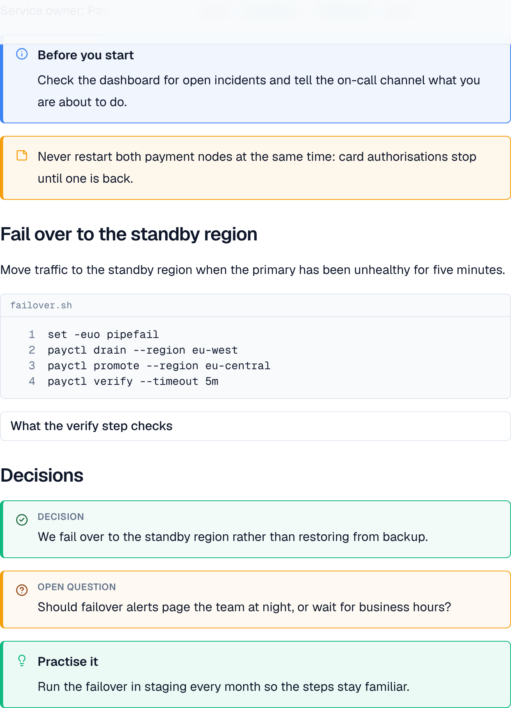
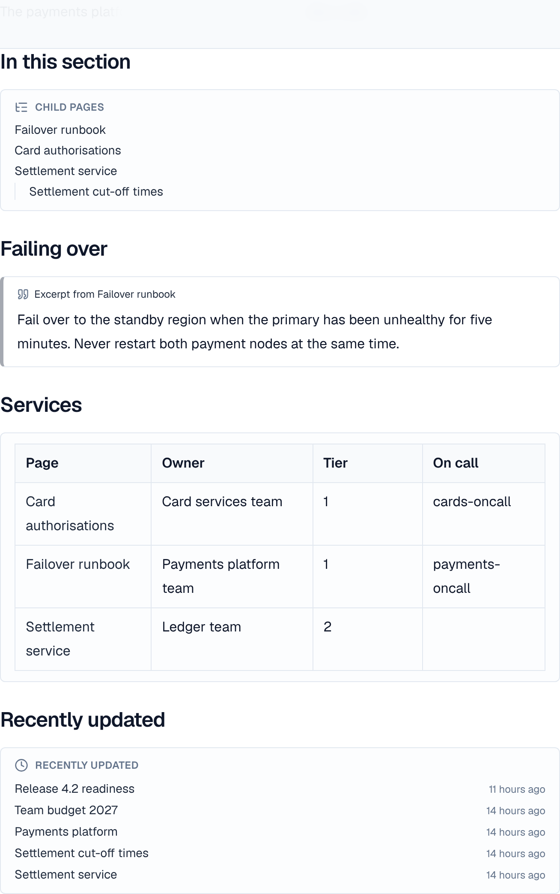
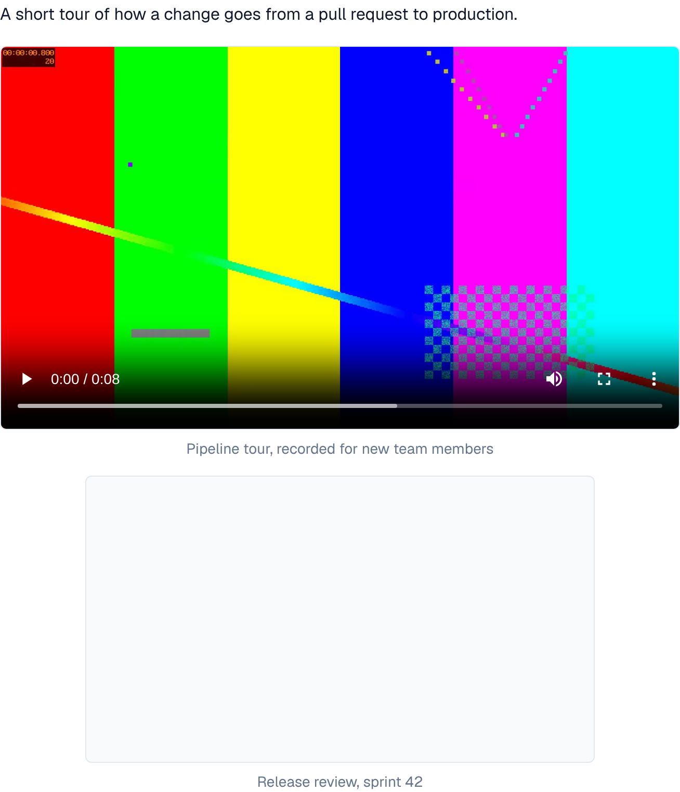
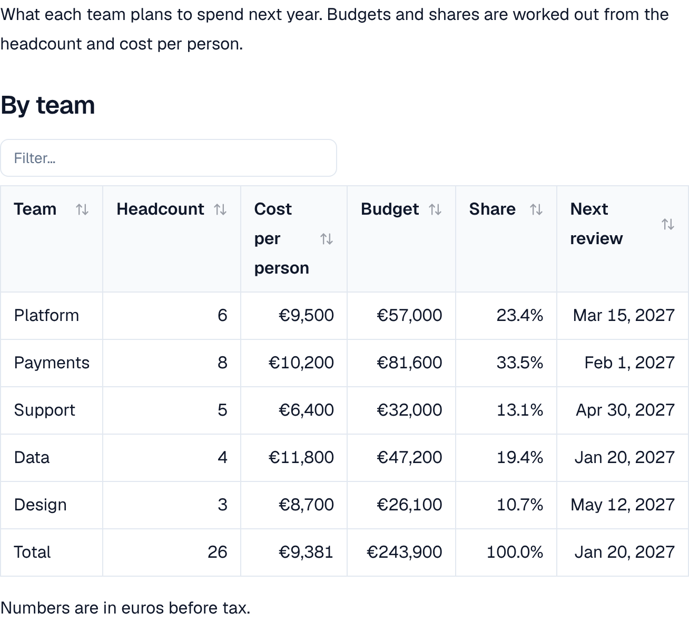
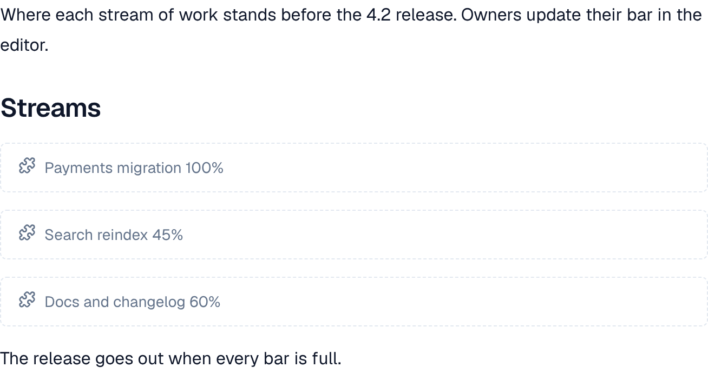

1. Overview
Besides text, a page can hold blocks: boxes that stand out, blocks that show other pages, videos, spreadsheet tables and blocks from plugins. Insert any of them from the "/" menu in the editor. To change one later, select it and choose Block settings in the toolbar. Pages imported from Confluence get these blocks for the macros they used; see Import and export.
2. Boxes: panels, expand, decision

| Block | What it does | Example |
|---|---|---|
| Info panel / Warning panel | A coloured box around text. Its Type can be Info, Note, Warning, Tip or Success, with an optional Title. | A Before you start info panel at the top of a runbook. |
| Expand | A section readers click to open. Its title defaults to Show more; Open by default shows it open. | What the verify step checks, with details most readers skip. |
| Decision | Records a Decision or an Open question, each with its own colour. | Decision: we fail over to the standby region rather than restoring from backup. |
Remove box, keep content in a box's settings takes the box away and leaves its text on the page.
3. Status
A small coloured label inside a line of text. Enter its Text and pick a Colour: grey, blue, green, yellow, red or purple. Example: APPROVED in green next to Current state.
4. Anchor
An invisible mark you can link to. Give it a Name (letters, digits, - and _, up to 64); link to it by adding # and the name to the page's address. Headings have anchors of their own already.
5. Code block
Code in a fixed-width font. Its settings add a File name above it and Line numbers. Example: failover.sh with four numbered lines.
6. Excerpt and Include excerpt
An Excerpt marks part of a page so other pages can show it. Give it an optional Name when a page has more than one. Hide on this page shows it only where it is included.
Include excerpt shows another page's excerpt: paste the page's Page link from the address bar and, if needed, the Excerpt name. It shows Excerpt from <page> and always shows the current published text. Example: the overview of a team's area quotes the first lines of its failover runbook.
A hidden excerpt isn't private: it still shows where other pages include it, and in search and page history.
7. Include page
Shows the whole published content of another page, by its Page link. A page can't include itself, and blocks that show other pages aren't shown inside an included page.
8. Page properties and Page properties report
Page properties holds a two-column table of facts about the page (owner, tier, on-call). Give it an optional Name when a page has more than one.
Page properties report gathers those tables into one: for each published page in the space with a given Label, one row, with a column per property. Example: a Services report on the team's overview lists every page labelled service with its Owner, Tier and On call. A report shows up to 12 columns.
9. Child pages, Page tree, Recently updated

| Block | Shows | Settings |
|---|---|---|
| Child pages | The pages under this one | Levels: 1 to 3 (default 1) |
| Page tree | The space's page tree | Levels (default 2) |
| Recently updated | The space's most recently changed pages, with when | Pages to list: 5, 10 or 20 (default 10) |
These blocks show each reader only the pages they can see: what you see in the editor may be more than a reader sees. Preview the page to check it. Not every page is listed appears when a list is cut short.
10. Video
Video adds a video from a file or a video site.
- Upload a file: MP4 or WebM, up to 200 MB. A poster frame is taken from it. Add Subtitles as a WebVTT (.vtt) file up to 512 KB, with its Language (such as en or pt-BR).
- Link from a video site: paste the link. Only sites your administrator allows can be used (YouTube and Vimeo, or your organization's own video platform), set in Settings → Security → Video sites. If a site is taken off the list later, its videos stop playing.
- Both take a Caption and a Start at time (m:ss).

11. Spreadsheet tables
A Spreadsheet table is a table whose cells can hold formulas. Select a cell and type a value, or a formula starting with =, such as =SUM(B2:B4), in the bar above the table. The bar also sets the cell's Number format (as typed, number, currency, percent or date), its Decimal places and, for currencies, the Currency code.

- References are A1-style within the same table: A1 is the first row's first cell. Another table can't be referenced.
- Values are worked out in the editor as you type and saved with the page, so readers see them at once. Hover over a cell to see its formula.
- Readers can sort a column and Filter rows for themselves, when the first row is headers and there are no merged cells.
- Numbers and dates show in each reader's language.
- Errors show in the cell: #DIV/0!, #VALUE!, #REF!, #NAME? (a function that isn't available), #CIRCULAR! (a formula that reads itself) or #CALC! (too slow to work out).
Functions you can use:
| Kind | Functions |
|---|---|
| Sums and counts | SUM, AVERAGE, COUNT, COUNTA, COUNTBLANK, MIN, MAX, MEDIAN, PRODUCT, SUMIF, COUNTIF, AVERAGEIF |
| Numbers | ROUND, ROUNDUP, ROUNDDOWN, ABS, INT, MOD, POWER, SQRT, CEILING, FLOOR |
| Logic | IF, IFERROR, AND, OR, NOT, TRUE, FALSE, ISBLANK, ISNUMBER, ISTEXT, ISERROR |
| Lookup | VLOOKUP, HLOOKUP, INDEX |
| Text | CONCAT, CONCATENATE, LEN, LEFT, RIGHT, MID, UPPER, LOWER, TRIM, TEXT, T |
| Dates | TODAY, DATE, DATEDIF, YEAR, MONTH, DAY, DAYS |
A table holds at most 2,000 formulas.
12. Plugin blocks
Plugins can add their own blocks, such as a progress bar or a diagram. While such a plugin is active, its blocks are listed in the "/" menu under their own names; the block is drawn by the plugin, inside the page, and its settings are inside the block.

- If the plugin is turned off or removed, or the licence is below Pro (plugins need Pro), readers see the block's short text description instead, and the block is kept on the page.
- Visitors who aren't signed in, and pages that include another page, see the text too.
- A page can hold up to 50 plugin blocks; the first 20 are drawn, the rest show their text.
A macro from another wiki that an import couldn't convert shows as Imported macro, with What it held. You can leave it or replace it with a block.